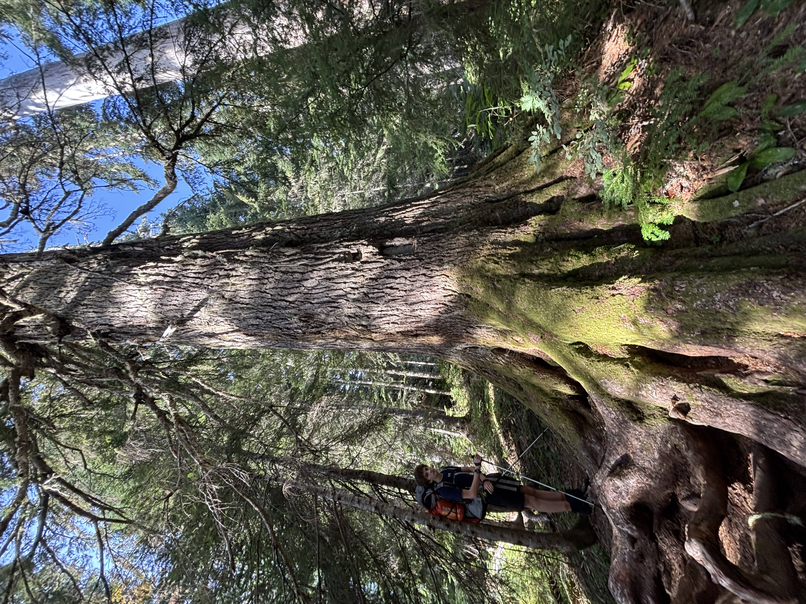
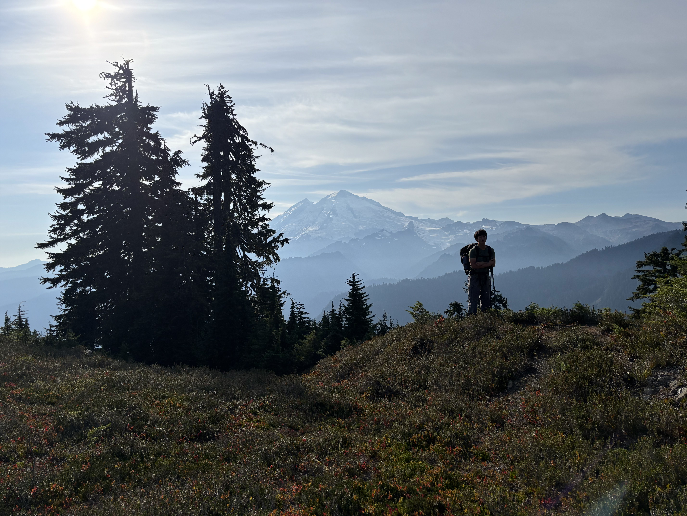
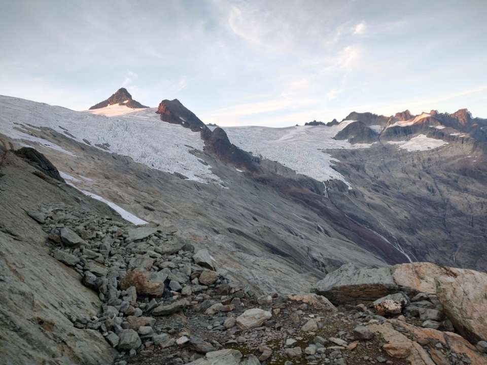
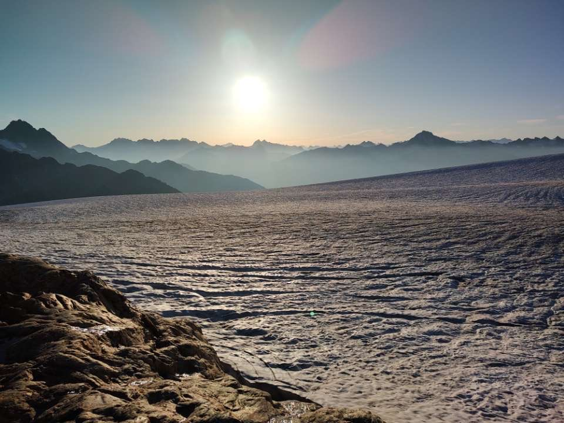
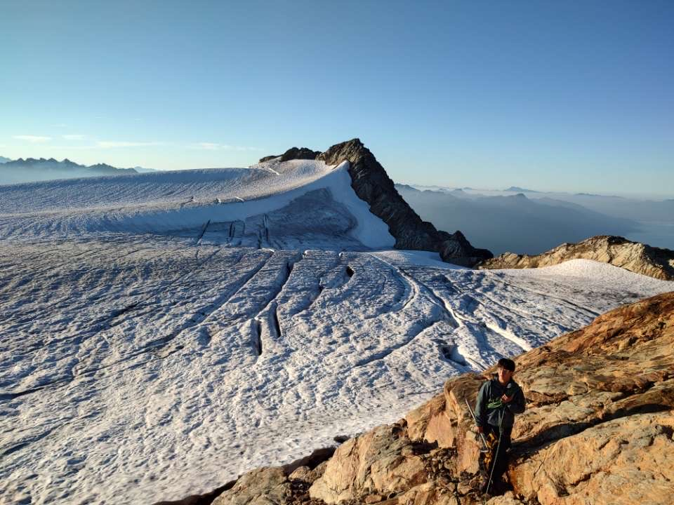
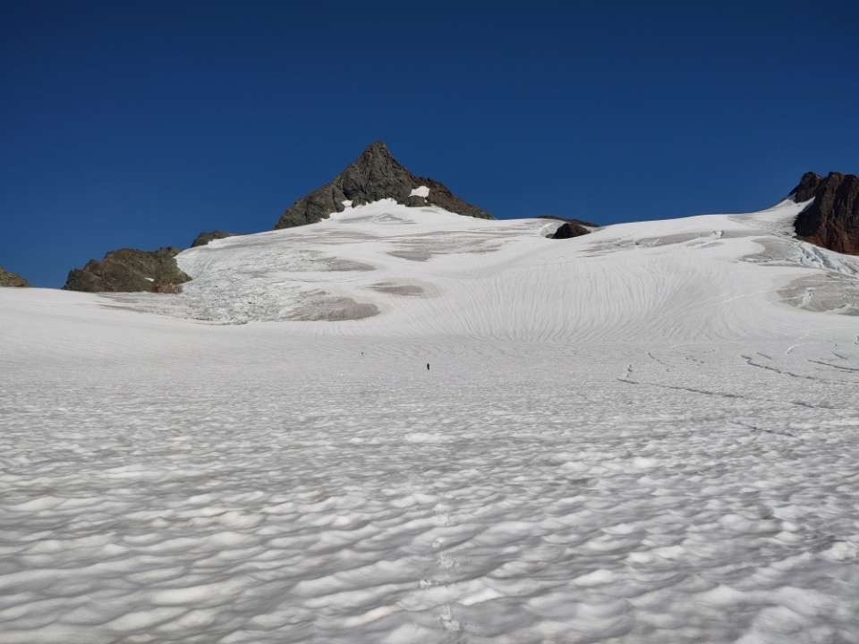
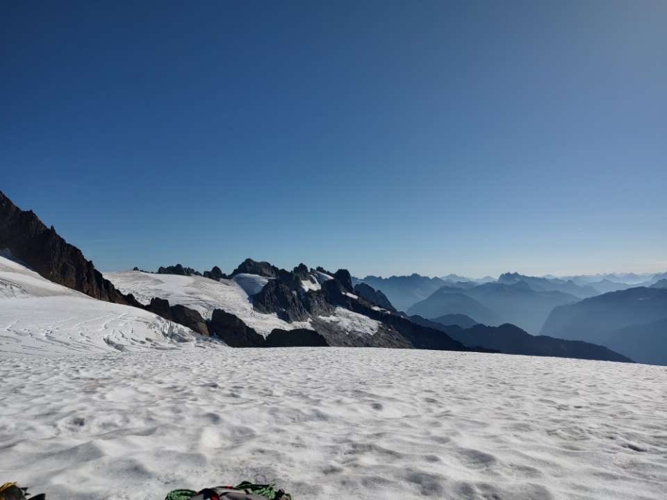
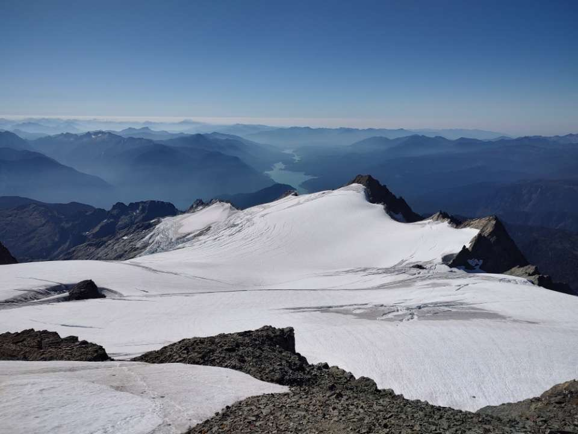
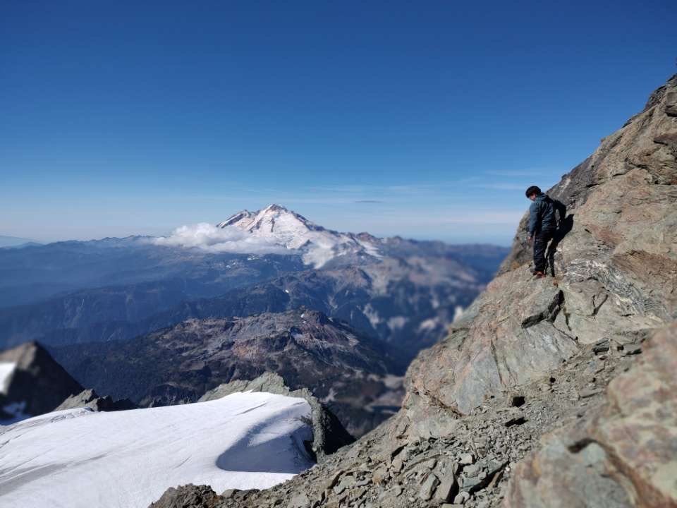
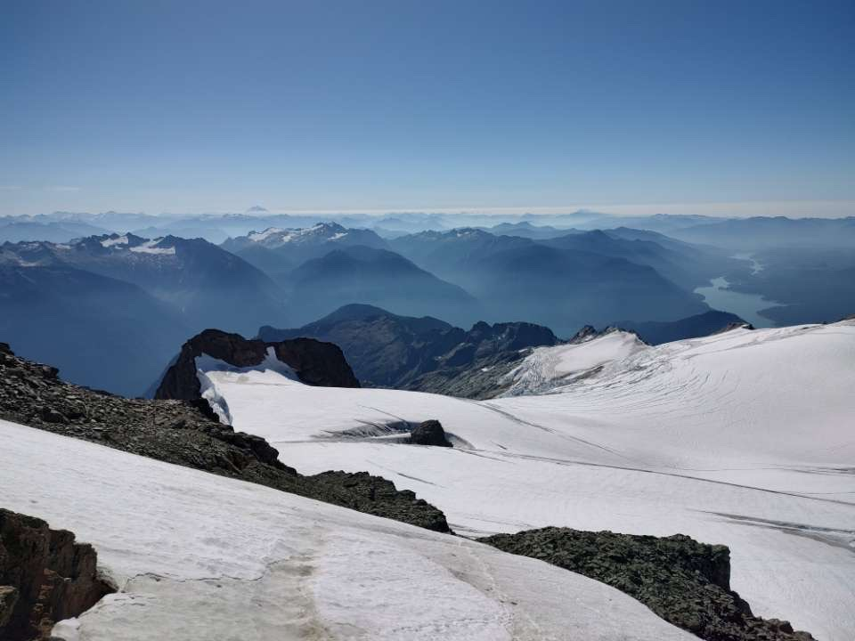

Mt Shuksan
Located in the North Cascades, Mt. Shuksan stands at an elevation of 2783m and prominence of 1344m










Mt. Shuksan — Sulphide Glacier Route
September 19–20, 2025
Trailhead → Base Camp
Hit the Shannon Ridge trailhead just before noon. The trail starts as a well-maintained forest path, climbing gradually through old-growth before opening up onto heather benches and broken slabs higher up. You cross into North Cascades National Park territory on the way up — camp sits right on the other side of that boundary, just below the toe of the Sulphide Glacier at around 6,100 ft.
Camp was completely dry — no snow, just rock and dirt tent pads with wide open views of the North Cascades. A guided group was already set up nearby which made finding the spot easy. Water from the stream, dinner, early night. Big day ahead.
Camp → Summit → Camp
Left camp at 7 with crampons on and the glacier hard and cold. The lower Sulphide is mostly blue ice this late in the season, with open crevasses you route around rather than over. The boot pack from prior parties helped with navigation in the early morning light.
The route's biggest curveball in late September was the glacier split. A prominent rock band cuts across at around 6,500 ft where the lower and upper sections of the Sulphide have pulled completely apart, leaving a loose 3rd class scramble of a couple hundred feet to regain the upper glacier. It added about an hour — not technical, but slow and loose going with a full pack and rope team. Once back on the upper Sulphide the angle steepens toward the base of the summit pyramid.
The summit pyramid is where the route steps up to Class 3/4 — solid rock but real exposure, hands and feet the whole way up the center gully. Rockfall is a genuine concern with multiple parties moving up and down at the same time, so we moved efficiently and kept communication with teams above. Topped out at noon. Baker to the south, the Pickets to the east, the whole North Cascades in every direction.
Descent of the pyramid takes full attention — easier to rush on the way down, and that's when mistakes happen. Back on the glacier the pace picked up and we were at camp by mid-afternoon.
Camp → Car
Breaking camp on post-summit legs is its own kind of effort. Everything gets stuffed in with less care than it went in with. We were moving by mid-afternoon, aiming to clear the glacier while daylight held.
The descent went fast — downhill on firm ice is efficient if not relaxing. The slab section below the lower glacier is where tired feet start making errors so we kept the pace measured. Back in the trees it was fully dark, headlamps on for the second time that day. The lower forest trail feels a lot longer on the way out than it did going in.
Trailhead at 11:00 PM. Long day. The drive out was quiet.